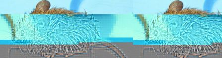

Dans le cadre du projet Reset, des déchets numériques sont ressuscités, dans le but d'explorer leur potentialités inexplorées.
Reset s'interesse aux souris, éléments simples et inévitable de l'informatique moderne, dont l'avenir est plus que sombre actuellement.

Les poubelles en sont remplies, mais pour autant, elles fonctionnent encore. Elles sont juste démodées, une des caractéristiques principales justifiant l'obsolescence des artefacts informatiques et électroniques : la mode a passé.
Comme l'avance PMO dans son pamphlet à l'intention des téléphones portables (gadget de destruction massive) : dans le monde numérique, le risque majeur, c'est la ringardise.
Alors on assume pleinement le fait d'être ringard, nous acceptons de prendre les choses à rebours en s’intéressant à des technologies désuètes mais dont nous pressentons que les possibilités offertes restent sous-exploitées ou très orientées.
Lorsque nous ouvrons une souris, on y trouve une technologie quasi open-source, de part le fait que les composants sont encore traversants et les puces souvent documentées par des datasheet trouvables sur Internet.
De quoi laisser penser, que ces éléments encore sains pourraient servir dans de nombreux types de projets.
Lors de ce premier atelier 'mouse resurrection', nous avons ouvert et commencé à documenter les pièces, composants et capteurs trouvés dans les différents modèles de souris, ainsi que les détournements ayant déjà eu lieu avec ces éléments combinés à un Arduino par exemple.
La totalité des expériences, atelier et documentation sera publié sur le site de Reset très prochainement.